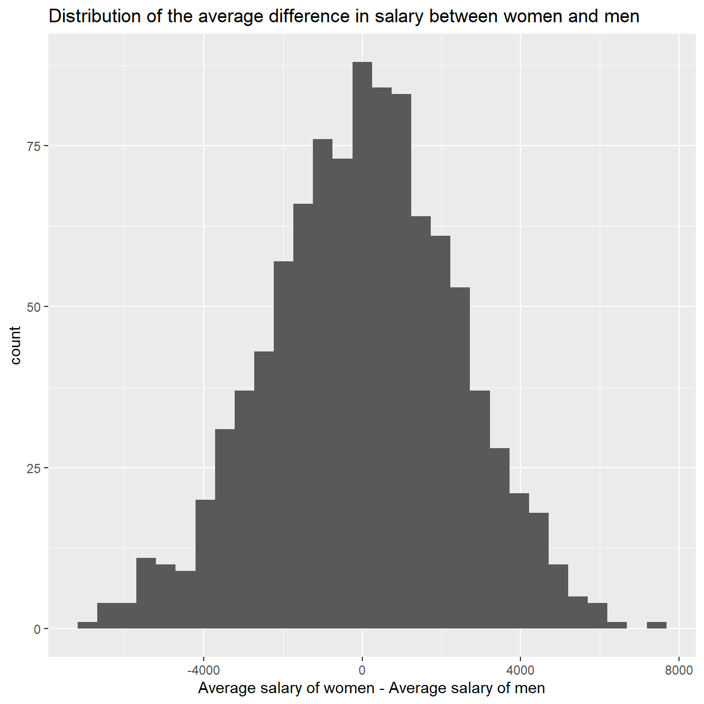

At the last board meeting of Omega Group Plc., the headquarters of a large multinational company, the issue was raised that women were being discriminated in the company, in the sense that the salaries were not the same for male and female executives. A quick analysis of a sample of 50 employees (of which 24 men and 26 women) revealed that the average salary for men was about 8,700 higher than for women. This seemed like a considerable difference, so it was decided that a further analysis of the company salaries was warranted.
We will carry out the analysis. The objective is to find out whether there is indeed a significant difference between the salaries of men and women, and whether the difference is due to discrimination or whether it is based on another, possibly valid, determining factor.
omega <- read_csv(here::here("data", "omega.csv"))
glimpse(omega) # examine the data frame## Rows: 50
## Columns: 3
## $ salary <dbl> 81894, 69517, 68589, 74881, 65598, 76840, 78800, 70033, ...
## $ gender <chr> "male", "male", "male", "male", "male", "male", "male", ...
## $ experience <dbl> 16, 25, 15, 33, 16, 19, 32, 34, 1, 44, 7, 14, 33, 19, 24...Is there a significant difference between the salaries of the male and female executives? We shall see…
# Summary Statistics of salary by gender
mosaic::favstats (salary ~ gender, data=omega)## gender min Q1 median Q3 max mean sd n missing
## 1 female 47033 60338 64618 70033 78800 64543 7567 26 0
## 2 male 54768 68331 74675 78568 84576 73239 7463 24 0# Dataframe with two rows (male-female) and having as columns gender, mean, SD, sample size,
# the t-critical value, the standard error, the margin of error,
# and the low/high endpoints of a 95% condifence interval
omega_summarized <- omega %>%
# grouping by gender
group_by(gender) %>%
# summarizing
summarize(mean_gender = mean(salary),
count_gender = n(),
sd_gender = sd(salary),
t_crit = qt(1 - (0.05/2),count_gender - 1),
se_gender = sd_gender/sqrt(count_gender),
moe_gender = se_gender * t_crit,
upper_ci_gender = mean_gender + t_crit * se_gender,
lower_ci_gender = mean_gender - t_crit * se_gender)
# showing the result
omega_summarized## # A tibble: 2 x 9
## gender mean_gender count_gender sd_gender t_crit se_gender moe_gender
## <chr> <dbl> <int> <dbl> <dbl> <dbl> <dbl>
## 1 female 64543. 26 7567. 2.06 1484. 3056.
## 2 male 73239. 24 7463. 2.07 1523. 3151.
## # ... with 2 more variables: upper_ci_gender <dbl>, lower_ci_gender <dbl>There appears to be more variability within the sample for female salaries. In fact, the CI is larger as well as the margin of error and standard deviation. The t critical for females is lower as well, even though the sample size is larger for females than for men. This reinforces the idea that the salaries of female workers selected vary more than those of men for this sample.
Hypothesis testing; null hypothesis being that the mean difference in salaries is zero, or that, on average, men and women make the same amount of money:
# hypothesis testing using t.test()
t.test(salary ~ gender, omega)##
## Welch Two Sample t-test
##
## data: salary by gender
## t = -4, df = 48, p-value = 2e-04
## alternative hypothesis: true difference in means is not equal to 0
## 95 percent confidence interval:
## -12973 -4420
## sample estimates:
## mean in group female mean in group male
## 64543 73239# hypothesis testing using infer package
infer_hypo_salary <- omega %>%
# specifing the variables
specify(salary ~ gender) %>%
# creating the null distribution
hypothesize(null = "independence") %>%
# generating 1000 simulated samples
generate(reps = 1000, type = "permute") %>%
# finding the delta between the means of samples
calculate(stat = "diff in means", order = c("female", "male"))
# visualizing the result
ggplot(infer_hypo_salary, aes(x = stat)) +
geom_histogram() +
labs(title = 'Distribution of the average difference in salary between women and men', x = 'Average salary of women - Average salary of men') +
NULL
The distribution seems to highlight the fact that the difference might be statistically relevant. Both hypotesis test suggest that women consistently earn less than men on average. We can see this from the 95% CI produced in the first test. The CI does not include 0, thus the difference is mostly likely meaningful.
At the board meeting, someone raised the issue that there was indeed a substantial difference between male and female salaries, but that this was attributable to other reasons such as differences in experience. A questionnaire send out to the 50 executives in the sample reveals that the average experience of the men is approximately 21 years, whereas the women only have about 7 years experience on average (see table below).
# Summary Statistics of salary by gender
favstats (experience ~ gender, data=omega)## gender min Q1 median Q3 max mean sd n missing
## 1 female 0 0.25 3.0 14.0 29 7.38 8.51 26 0
## 2 male 1 15.75 19.5 31.2 44 21.12 10.92 24 0# perform t-test to verify the hypothesis
t.test(experience ~ gender, omega)##
## Welch Two Sample t-test
##
## data: experience by gender
## t = -5, df = 43, p-value = 1e-05
## alternative hypothesis: true difference in means is not equal to 0
## 95 percent confidence interval:
## -19.35 -8.13
## sample estimates:
## mean in group female mean in group male
## 7.38 21.12# perform t-test (with infer) to verify the hypothesis
infer_hypo_experience <- omega %>%
# specifying the variables
specify(experience ~ gender) %>%
# creating the null distribution
hypothesize(null = "independence") %>%
# generating 1000 simulated samples
generate(reps = 1000, type = "permute") %>%
# finding the delta between the means of samples
calculate(stat = "diff in means", order = c("female", "male"))
# visualizing the result
ggplot(infer_hypo_experience, aes(x = stat)) +
geom_histogram() +
labs(title = 'Distribution of the average difference in experience between women and men', x = 'Average experience of women - Average experience of men') +
NULLIt is possible to conclude that there is in fact a sensible difference between the experience of the two groups. The Ci in the first test does not include 0 and the second test conferms the findings of the first one. This result might undermine the considerations done before since the difference in salary might be attributable to differences in experiences rather than in gender.
Someone at the meeting argues that clearly, a more thorough analysis of the relationship between salary and experience is required before any conclusion can be drawn about whether there is any gender-based salary discrimination in the company.
# plotting the scatterplot
ggplot(omega, aes(x = experience, y = salary)) +
geom_point() +
geom_smooth(method=lm) +
labs(title = 'Plot of the relationship between salary and experience', x = 'experience', y = 'salary\n') +
NULL# creating the scatterplot, differentiating the points for gender
ggplot(omega, aes(x = experience, y = salary, color = gender)) +
geom_point() +
geom_smooth(method=lm) +
labs(title = 'Plot of the relationship between salary and experience, grouped by gender', x = 'experience', y = 'salary\n') +
NULLThere seems to be a meaningful relationship between experience and salary, both for men and women. The linear regression line is upward sloping for both groups, signalling that individuals with more experience will be paid more. The 95% CI are quite wide in the plot with the two separate regression. Obviously the smaller number of observations impacts the CI.
omega %>%
select(gender, experience, salary) %>% #order variables they will appear in ggpairs()
ggpairs(aes(colour=gender, alpha = 0.3))+
theme_bw()In addition to the comment made above, the relationship between these two variables seems to to be of positive correlation. As experience grow, salary does as well. Women tend to have less experience and thus their average salary is lower.